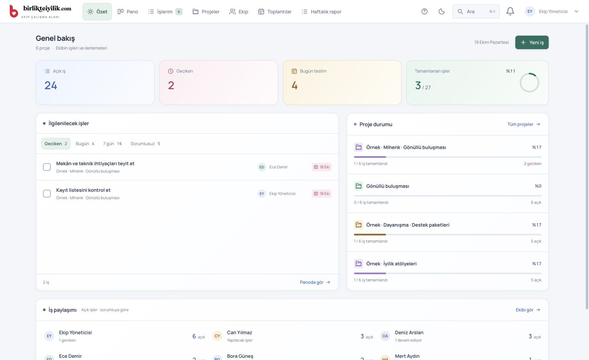
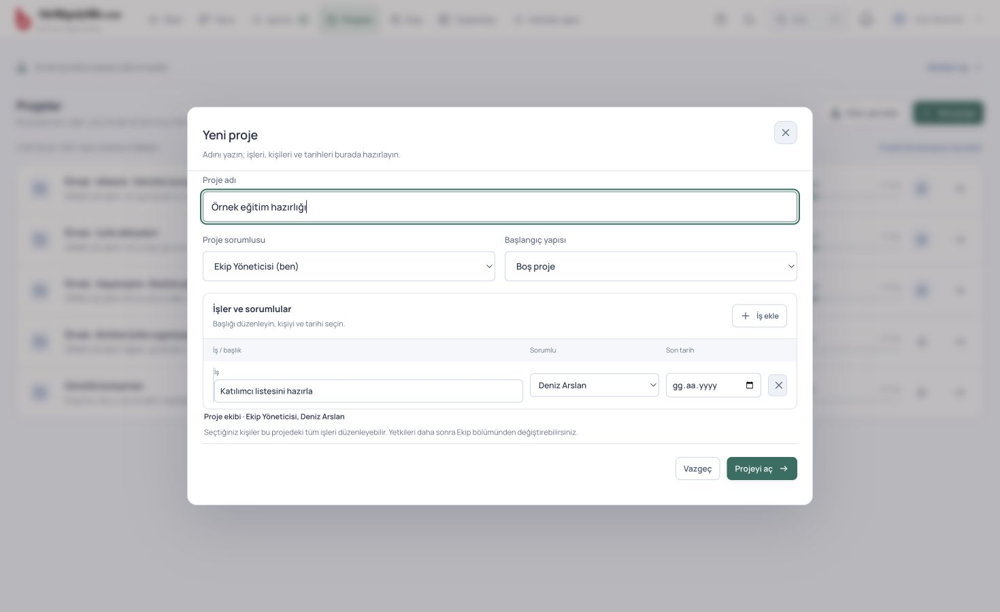
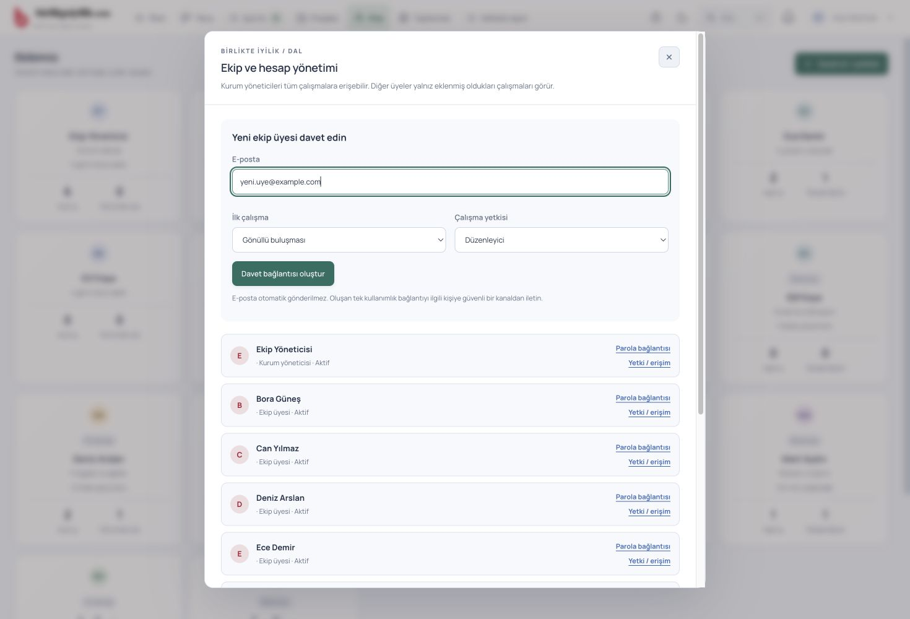
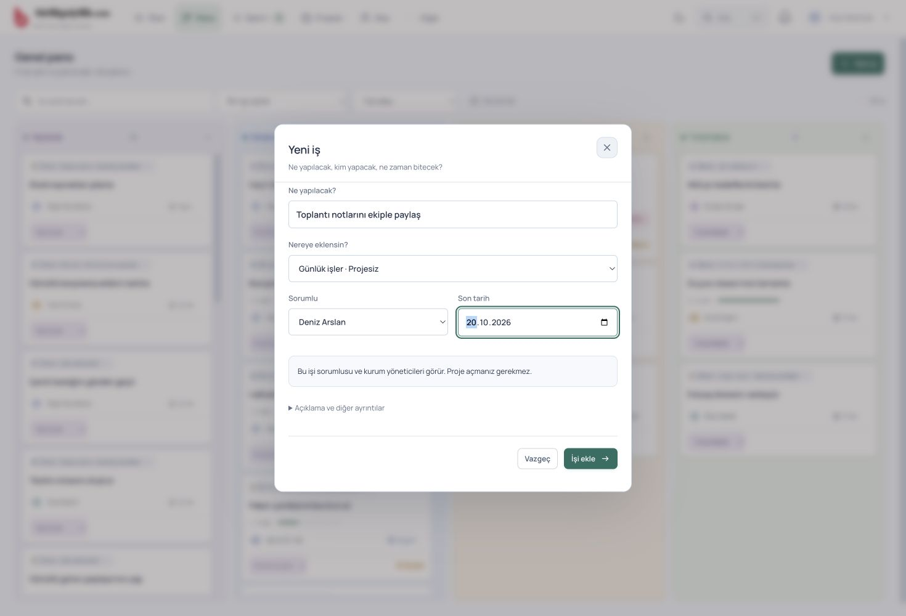
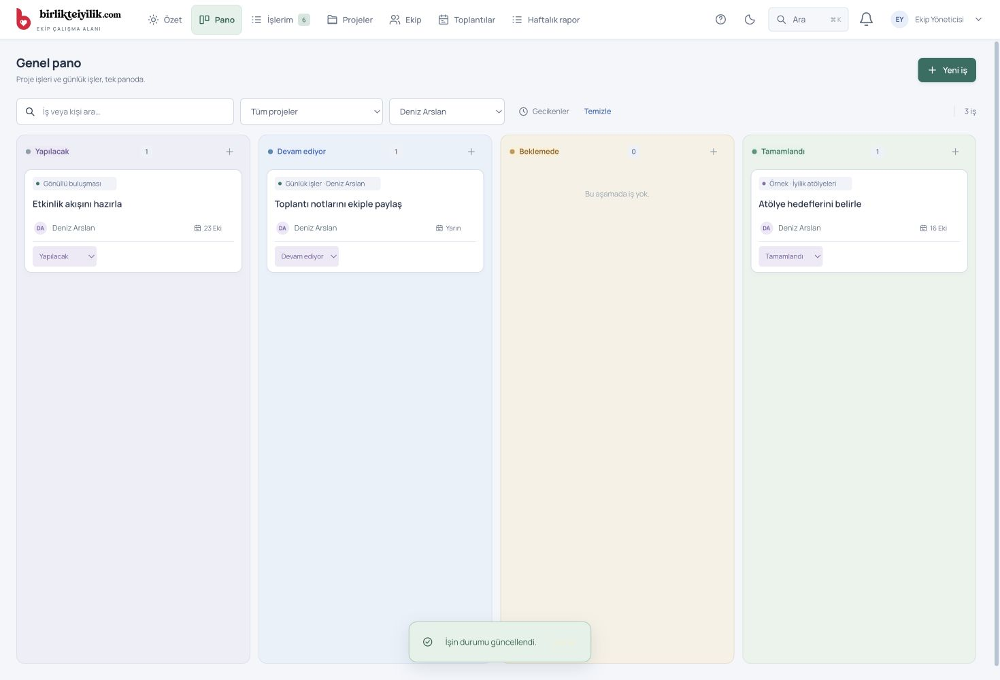
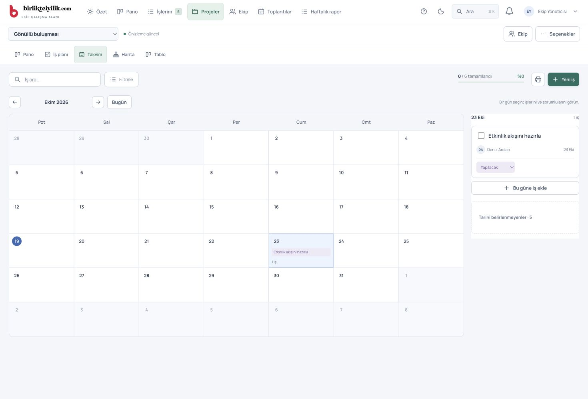
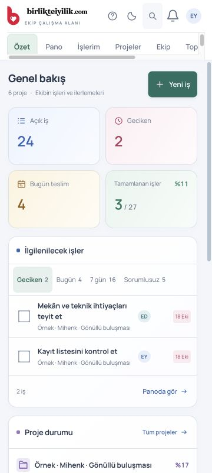
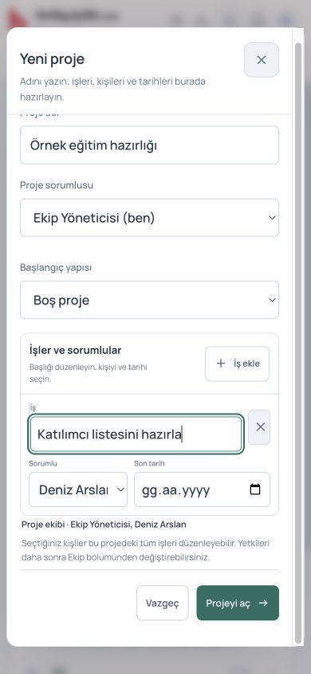

Nereden başlayacağım?
Özet ile durumu görün. Pano ile işi yönetin.
Üst bardaki Özet, açık işleri, gecikenleri ve proje ilerlemesini gösterir. Bir sayıya dokununca ilgili işler açılır.
Toplantılar ve Haftalık rapor da doğrudan üst bardadır. Ay / güneş düğmesiyle temayı değiştirebilirsiniz.

Proje nasıl açılır?
Bir form. Adı, işleri, kişileri ve tarihleri.
- Projeler → Yeni proje yolunu açın. Bu düğme kurum yöneticisinde görünür.
- Proje adını yazın. İsterseniz bir proje sorumlusu seçin.
- Başlangıç yapısı alanında Boş proje ile başlayın veya Etkinlik, Proje planı, Dairesel ekip gibi bir şablon seçin.
- Her satıra işin adını yazın. Yanından gerçek ekip üyesini ve son tarihi seçin. İş ekle ile yeni satır açın.
- Projeyi aç düğmesine basın. Seçtiğiniz kişiler aynı kayıt sırasında proje ekibine eklenir.
Sonradan kişi eklemek için projeyi açın, sağ üstteki Ekip düğmesinden kişiyi ve yetkisini seçin. Sorumlu ataması ile proje erişimi farklıdır; bu hazırlık formu ikisini birlikte halleder.

Yeni bir insan nasıl eklenir?
Önce ekibe katılır, sonra listeden seçilir.
- Ekip → Davet et / yetkiler bölümünü açın. Kurum yöneticisi yetkisi gerekir.
- Kişinin e-posta adresini yazın. İsterseniz İlk çalışma olarak bir proje seçin; henüz proje yoksa boş bırakın.
- Normal çalışma için Düzenleyici yeterlidir. Yalnız okuyacak kişi için İzleyici seçebilirsiniz.
- Davet bağlantısı oluştur düğmesine basın ve oluşan bağlantıyı kişiye iletin.
- Kişi davet edilen e-posta adresiyle kayıt olur, e-postasını doğrular ve giriş yapar. Sonra aktif Ekip listesinde görünür.
Kişi zaten Ekip listesinde varsa tekrar davet etmeyin. Yeni proje formunda doğrudan seçin veya mevcut projenin Ekip bölümünden ekleyin. Ad-soyad ve profil fotoğrafı sağ üstteki hesap düğmesinden düzenlenir.

Küçük bir iş için proje şart mı?
Hayır. Yeni iş → Günlük işler · Projesiz.
- Özet, Pano veya İşlerim ekranından Yeni iş düğmesine basın.
- “Toplantı notlarını ekiple paylaş” gibi kısa, açık bir başlık yazın.
- Nereye eklensin? alanını Günlük işler · Projesiz olarak bırakın.
- Sorumluyu ve gerekiyorsa son tarihi seçin. İşi ekle düğmesine basın.
Bu işler Projeler listesini doldurmaz. Sorumlusunun İşlerim ekranına ve yöneticinin Pano ekranına girer. İşi bir projeye eklemek isterseniz aynı formda projenin adını seçin.

Yönetici nasıl takip edecek?
Aynı panoda kim, hangi işi, hangi aşamada yapıyor?
- Üst bardan Pano ekranını açın. Kurum yöneticisi bütün projeleri ve günlük işleri görür.
- Bir kişiyi seçerek onun işlerine odaklanın. Proje filtresiyle tek çalışmayı, Gecikenler ile öncelikli işleri görün.
- Kartın başlığına basarak ayrıntıyı ve yorumları açın. Değişiklikleri Kaydet ile paylaşın.
- Kartın altındaki durum alanından Yapılacak → Devam ediyor → Tamamlandı şeklinde ilerletin. Bekleyen işler için Beklemede seçin.
Çalışan günlük olarak İşlerim ekranını kullanabilir. Bir işi tamamladığında yönetici tarafındaki sayılar ve ilerleme de aynı kayıttan hesaplanır. Yeni ekip güncellemesi bildirimi çıktığında Göster ile ekranı yenileyin.

Tarihler ve şemalar nerede?
Bir proje, aynı kayıtların beş görünümü.
Projeyi açınca şu sekmeler görünür:
Takvim bölümünde bir güne basın. O günün işleri yanında, telefonda altında açılır. Bu güne iş ekle seçilen tarihle yeni iş başlatır. Tarihi belirlenmeyenler bölümünden tarihsiz işleri de açabilirsiniz.
Şablonlar Projeler → Hazır şemalar bölümünde durur. Sunum için projedeki Seçenekler → Sunumu hazırla yolunu kullanın.

Telefonda da aynı yol
Üst barı yana kaydırarak Toplantılar ve Haftalık rapora ulaşabilirsiniz. Proje formunda kişi ve tarih alanları alt alta yerleşir. Takvimde bir güne dokununca günlük iş listesine geçilir.
Bir düzenleme sırasında bağlantı kesilirse sekmeyi kapatmayın. Ekrandaki yeniden deneme veya taslak indirme seçeneğini kullanın; sunucu onayı gelmeden kaydın tamamlandığını varsaymayın.

